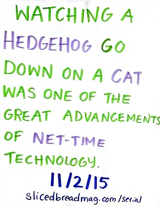

Sliced Bread Digital Serial
September - November 2015
Sliced Bread is the University of Chicago literary magazine. I have been a staff member since my first year, and on the editorial board since my second. For our Spring 2015 issue, we faced a problem: we had reviewed a piece that was 25 pages, despite our requirement that pieces be under 16 pages. Additionally, this piece had a color illustration at the end that was integral to our story. As our staff had accepted the piece, we published it in our print issue. We had a difficult time formatting it, it took up a large part of the magazine (which is 6 by 9 inches), and we had to use a page of our color insert to preserve the last page. All in all, a headache. However, this brought to light an issue we have struggled with for years - our page limit on submissions. Often, we have had to request authors to cut down pieces in order for them to be reviewed for publication, and many refused. As such, we often missed out on lots of great writing. We had successfully launched a podcast earlier in the year, and proving that we got traffic from online-exclusive content. With this in mind, I proposed a serialized digital publication to the rest of the board.
Sliced Bread is the University of Chicago literary magazine. I have been a staff member since my first year, and on the editorial board since my second. For our Spring 2015 issue, we faced a problem: we had reviewed a piece that was 25 pages, despite our requirement that pieces be under 16 pages. Additionally, this piece had a color illustration at the end that was integral to our story. As our staff had accepted the piece, we published it in our print issue. We had a difficult time formatting it, it took up a large part of the magazine (which is 6 by 9 inches), and we had to use a page of our color insert to preserve the last page. All in all, a headache. However, this brought to light an issue we have struggled with for years - our page limit on submissions. Often, we have had to request authors to cut down pieces in order for them to be reviewed for publication, and many refused. As such, we’ve missed out on lots of great writing. We had successfully launched a podcast earlier in the year, and proving that we got traffic from online-exclusive content. With this in mind, I proposed a serialized digital publication to the rest of the board.
As the one spearheading the project, I worked as a liaison between the layout committee, the author, the illustrators, and the editorial board. I personally did all of the publicity. I set a timeframe for each group, coordinated all efforts through email because of differing locales of the artists, handled crises - such as when one artist had a technology malfunction and had to drop out - and oversaw the design of the final product.

Since this was a completely new venture, we needed to amp up as much publicity as possible. I created posters that aesthetically matched our branded posters in the past - colored markers on white paper, something goofy that stands out from the more "official" announcements around the university. I chose key quotes from the serial that would pique the interest of passerby. I also chose an easy url to remember - slicedbreadmag.com/serial, and included that on all of our posters. I designed the page to feature the first (gripping) line of the piece, along with an explanation of the project.
I posted on the Facebook group leading up to the launch, always with an image to increase virality. The author and the illustrators shared the post on their profiles in order to spread the word. Our posts average under 100 views, but for the promotion I handled we consistently surpassed that.
Initial announcement - 390 views
First issue release - 778 views
Second issue release - 212 views
Third issue release - 135 views
The first serial is available in full on the Sliced Bread website. I'm current coordinating our second issue serial, to be released in Fall 2016.